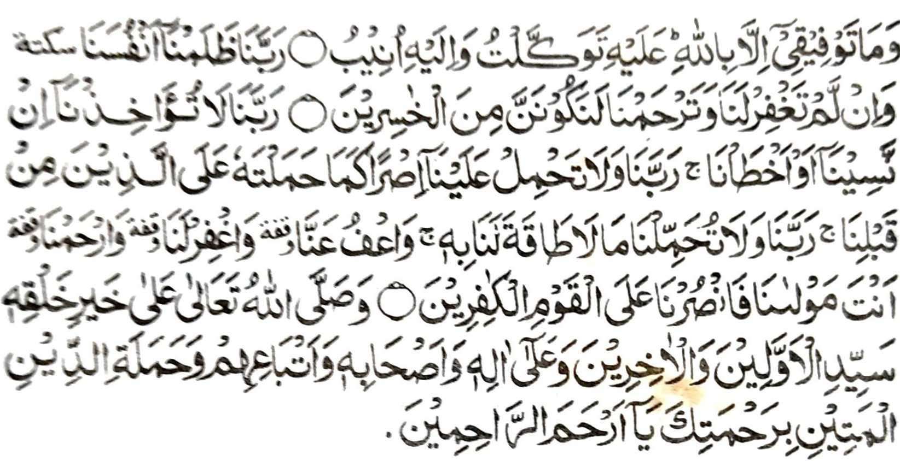

Pitharo o manga Auliya, a so Sambayang a pangeni ago kapakimbitiyara-i ko Allah, ago giyoto i sabap sa khatekhes so katatanodi ko gi-i ron kinggoIalanen. So manga ped a paliyogat, na khapakay a kena ba ta tanto a matekhes so penggola-olaan ta. Ibarat iyan, na aya hadap o kabegay sa Zakat na penggaston ta so tamok ta sa kasoso-at o Allah. So kanggasto, a sekaniyan, na tanto a maregen ko tao apiya kena ba niyan pipikira sa mala ogaid na pekhagedam iyan so kasakit o kipembegan niyan non. Sakamaoto mambo, so powasa na paliyogat so kitaregen ko kakan ago so kainom ago so kapamakay sa karoma. Langon angka-iya manga inisapar na tanto a maregen, apiya aya kininggolalanen non na malobay so niat ago apiya kena ba tanto gi-i phiya-piya-i o tao. Ogaid na so Zikr ago so kapembatiya-a ko Qur'an, na giyanan i matatago ko Sambayang. O di siran inggolalan sa kasatiman o pamikiran, na dingkaden matharo o ba bethowi sa pangeni odi na kambitiyara-i ago so Allah. Mimbaloy siran baden a katharo a lagid o piyagalimo-ogan a miyanaro, a di niyan katatanodan a daden a rarantek iyan ko pephakaneg on. Giyoto-i paliyogat den a ma-inengka tano so Sambayang, ka odi na mimbaloy so Sambayang a lagid o gi-i manarintang a totorogen, a daden a ma-ana niyan ko tao a pephakanegon, ago da-a a balas a khaparoli niyan. Sakamaoto a so Allah na di niyan phamakinegen so Sambayang a ininggolalan sa di katatanodan ago di matetekhes so pamikiran. Ogaid na apiya pen so manga Sambayang tano na di niyan malagid so rek o siran a manga poporo-i sabot a manga tao, na di khapakay o ba tano bagaken sekaniyan. Tanto a mala a karibat so kapikira sa da bali o kipamayandegen ko Sambayang inonta bo o matarotop. So kapamayandeg sa di tarotop a Sambayang na taralebi a di so kibagaken non, sabap sa aya khaoriyan non na mala a siksa sa Alongan a Maori Aden a Mad-hab a tiyangked iran a Kafir so tao a inibagak iyan so Sambayang thibaba.
Giyoto i sabap sa paliyogat reketano so kaperomasay tano ago kapag-ikhlas ka antano mipaginontolan so Sambayang tano ago tatapen tano so pangeni tano ko Allah a ibegay niyan reketano so bager a mmggolalan tano so Sambayang sa lagid o kininggolalanen non o manga tao a manga ala i paratiyaya ko miyanga-oona, ka antano makaparoli sa di maminos so isa a Sambayang a lagidanan sa kapiya a maped ko manga amal tano a linding tano ko rarangit o Allah.
Si-i ko kakhaposa-i, na rinayagen tano a so manga Mohaddithin na tanto sorin a maginawa sa kiyatarima-a iran sa kabebenar angka-iya manga Hadith pantag ko manga balas o mbaram-barang a simba. So peman so totholan ko manga auliya ago so manga barasimba a manga tao, na ped siran ko kalilid a totholan a miyanggola-ola o manosiya na giyoto-i sabap a salakao a daradat a ibebegay ron ko katharima-aon.

MASJID ABU BAKR AS-SIDDIQ
Basak, Malet-let
Marawi City